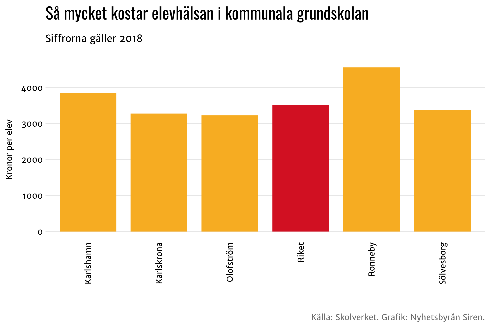
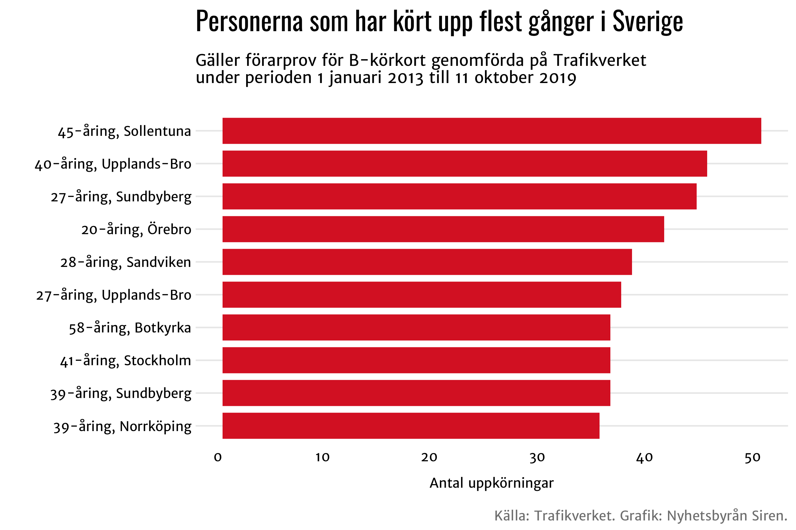
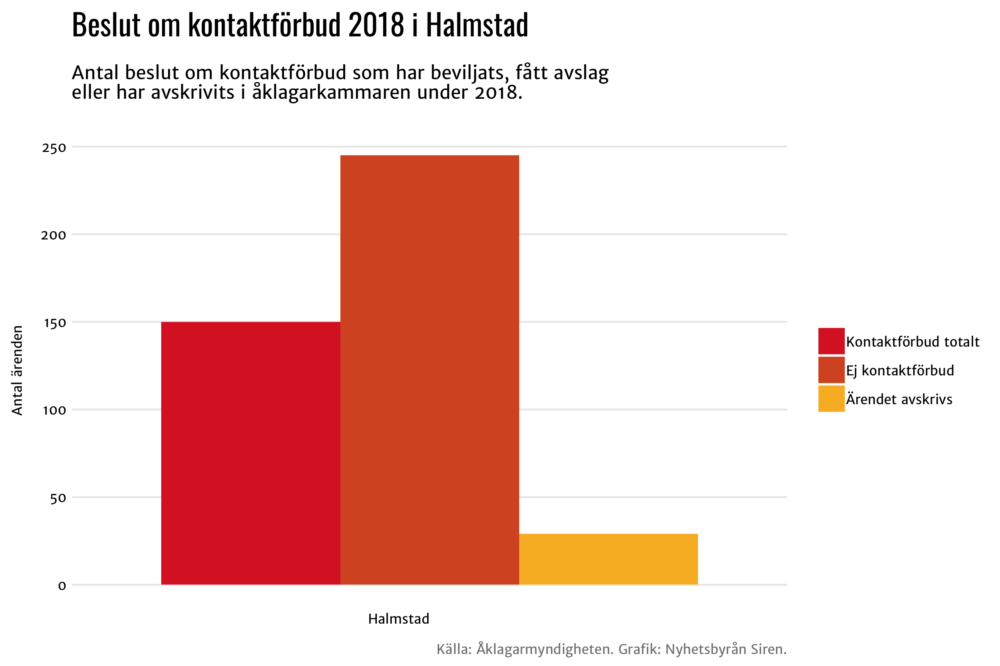
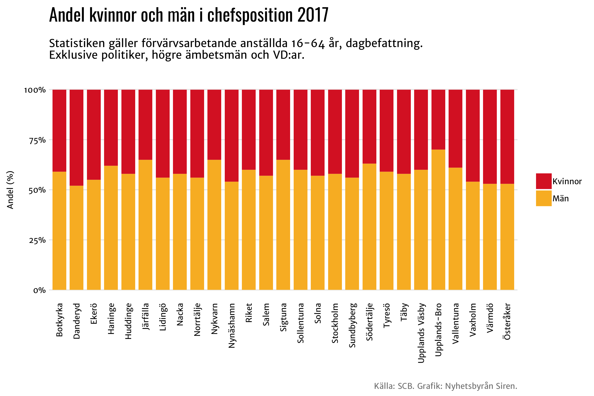
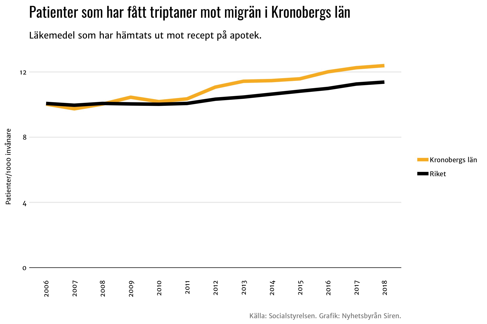

#Läs in data
df1 <- read_excel(here("raw_data", "lankommun.xlsx"), sheet=1, skip=0)
df2 <- read_excel(here("raw_data", "elevhalsa.xlsx"), sheet=1, skip=4)
df3 <- left_join(df1, df2, by="Kommun")
#Lista med länsnamnen
lista_lan <- c("Blekinge län", "Dalarnas län", "Gotlands län", "Gävleborgs län", "Hallands län", "Jämtlands län", "Jönköpings län", "Kalmar län", "Kronobergs län", "Norrbottens län", "Skåne län", "Stockholms län", "Södermanlands län", "Uppsala län", "Värmlands län", "Västerbottens län", "Västernorrlands län", "Västmanlands län", "Västra Götalands län", "Örebro län", "Östergötlands län")
#Plotta länsdiagram
for (i in lista_lan) {
chart <- df3 %>%
drop_na() %>%
filter(Län == i | Län == "Riket") %>%
mutate(highlight_flag = ifelse(Län=="Riket", T, F)) %>%
ggplot(aes(x=Kommun, y=Kostnad)) +
geom_bar(stat="identity", width = 0.8, aes(fill=highlight_flag), show.legend=FALSE) +
labs(x="",
y="Kronor per elev",
title="Så mycket kostar elevhälsan i kommunala grundskolan",
subtitle="Siffrorna gäller 2018",
caption="Källa: Skolverket. Grafik: Nyhetsbyrån Siren.") +
scale_fill_manual(values=palett1) +
theme_siren()
ggsave(filename=paste0(i, ".png"), path=here("output_data"), height=(400/72), width=(600/72))
print(chart)
}

#Läs in och förbered data
df <- read_excel(here("raw_data", "uppkorning.xlsx"), sheet=1, skip=0)
riks <- df %>% arrange(desc(`Antal försök`)) %>% head(10) %>% select(-Län)
#Plotta riksdiagram
chart <- riks %>%
ggplot(aes(x=reorder(Kommun, `Antal försök`), y=`Antal försök`)) +
geom_bar(stat="identity", width = 0.8, fill="#dc282c") +
labs(x="", y="Antal uppkörningar",
title="Personerna som har kört upp flest gånger i Sverige",
subtitle="Gäller förarprov för B-körkort genomförda på Trafikverket\nunder perioden 1 januari 2013 till 11 oktober 2019",
caption="Källa: Trafikverket. Grafik: Nyhetsbyrån Siren.") +
coord_flip() +
theme_siren()
ggsave(here("output_data", "Riket.png"), height = (400/72), width = (600/72))
print(chart)

#Förbered data
df1 <- read_excel(here("raw_data", "kontakt.xlsx"), sheet=1, skip=4)
df2 <- df1 %>% melt("Åklagarkammare")
lista_kammare <- c("Borås", "City", "Eskilstuna", "Falun", "Gävle", "Göteborg", "Halmstad", "Helsingborg", "Jönköping", "Kalmar", "Karlskrona", "Karlstad", "Kristianstad", "Linköping", "Luleå", "Malmö", "Norrköping", "Norrort", "Nyköping", "Skövde", "Sundsvall", "Söderort", "Södertörn", "Södra Skåne", "Uddevalla", "Umeå", "Uppsala", "Västerort", "Västerås", "Växjö", "Örebro", "Östersund")
#Plotta diagram per åklagarkammare
for (i in lista_kammare) {
chart <- df2 %>% filter(Åklagarkammare == i) %>%
ggplot(aes(x=Åklagarkammare, y=value, fill=as.factor(variable))) +
geom_bar(stat = "identity", position = "dodge") +
labs(x="", y="Antal ärenden", title=paste0("Beslut om kontaktförbud 2018 i ", i), subtitle="Antal beslut om kontaktförbud som har beviljats, fått avslag \neller har avskrivits i åklagarkammaren under 2018.", caption="Källa: Åklagarmyndigheten. Grafik: Nyhetsbyrån Siren.") +
ggsave(filename=paste0(i, ".png"), path=here("output_data"), height = (400/72), width = (600/72))
print(chart)
}

#Läs in och förbered data
df1 <- read_excel(here("raw_data", "lankommun.xlsx"), sheet=1, skip=0)
df2 <- read_excel(here("raw_data", "chef.xlsx"), sheet=1, skip=4)
df3 <- left_join(df1, df2, by="Kommun")
df4 <- gather(df3, "Kön", "Procent", 3:4)
#Lista med länsnamn
lista_lan <- c("Blekinge län", "Dalarnas län", "Gotlands län", "Gävleborgs län", "Hallands län", "Jämtlands län", "Jönköpings län", "Kalmar län", "Kronobergs län", "Norrbottens län", "Skåne län", "Stockholms län", "Södermanlands län", "Uppsala län", "Värmlands län", "Västerbottens län", "Västernorrlands län", "Västmanlands län", "Västra Götalands län", "Örebro län", "Östergötlands län")
#Plotta länsdiagram
for (i in lista_lan) {
chart <- df4 %>% filter(Län == i | Län == "Riket") %>%
ggplot(aes(x=Kommun, fill=Kön, y=Procent)) +
geom_bar(stat="identity", position="fill", width=0.8) +
labs(x="", y="Andel (%)", title="Andel kvinnor och män i chefsposition 2017", subtitle="Statistiken gäller förvärvsarbetande anställda 16-64 år, dagbefattning. \nExklusive politiker, högre ämbetsmän och VD:ar.", caption="Källa: SCB. Grafik: Nyhetsbyrån Siren.") +
scale_fill_manual(values=palett1) +
scale_y_continuous(labels = scales::percent_format(accuracy = 1)) +
theme_siren() +
ggsave(filename=paste0(i, ".png"), path=here("output_data"), height = (400/72), width = (600/72))
print(chart)
}

#Förbered data
df1 <- read_excel(here("raw_data", "varsel.xlsx"), sheet=1, skip=0)
lansdata <- gather(df1, "År", "Antal personer", 2:13)
lista_lan <- c("Blekinge län", "Dalarnas län", "Gotlands län", "Gävleborgs län", "Hallands län", "Jämtlands län", "Jönköpings län", "Kalmar län", "Kronobergs län", "Norrbottens län", "Skåne län", "Stockholms län", "Södermanlands län", "Uppsala län", "Värmlands län", "Västerbottens län", "Västernorrlands län", "Västmanlands län", "Västra Götalands län", "Örebro län", "Östergötlands län")
#Plotta diagram
for (i in lista_lan) {
chart <- lansdata %>% filter(Län == i) %>%
ggplot(aes(x=År, y=`Antal personer`, colour=Län, group=Län)) +
geom_line(size=2, show.legend=FALSE) +
geom_hline(yintercept = 0, size = 0.3) +
labs(x="", y="Antal personer", title=paste0("Varsel om uppsägning i ", i), subtitle="Antal personer berörda av varsel om uppsägning per år.", caption="Källa: Arbetsförmedlingen. Grafik: Nyhetsbyrån Siren.") +
scale_colour_manual(values=palett1) +
theme_siren()
ggsave(filename=paste0(i, ".png"), path=here("output_data"), height = (400/72), width = (600/72))
print(chart)
}
#Förbered data
df1 <- read_excel(here("raw_data", "triptan.xlsx"), sheet=1, skip=1)
lista_lan <- c("Blekinge län", "Dalarnas län", "Gotlands län", "Gävleborgs län", "Hallands län", "Jämtlands län", "Jönköpings län", "Kalmar län", "Kronobergs län", "Norrbottens län", "Skåne län", "Stockholms län", "Södermanlands län", "Uppsala län", "Värmlands län", "Västerbottens län", "Västernorrlands län", "Västmanlands län", "Västra Götalands län", "Örebro län", "Östergötlands län")
#Plotta diagram
for (i in lista_lan) {
chart <- df1 %>% filter(Region == i | Region == "Riket") %>%
ggplot(aes(x=År, y=`Patienter/1000 invånare`, colour=Region, group=Region)) +
geom_line(size=2) +
geom_hline(yintercept = 0, size = 0.3) +
labs(x="", y="Patienter/1000 invånare", title=paste0("Patienter som har fått triptaner mot migrän i ", i), subtitle="Läkemedel som har hämtats ut mot recept på apotek.", caption="Källa: Socialstyrelsen. Grafik: Nyhetsbyrån Siren.") +
scale_colour_manual(values=palett5) +
theme_siren()
ggsave(filename=paste0(i, ".png"), path=here("output_data"), height = (400/72), width = (600/72))
print(chart)
}
